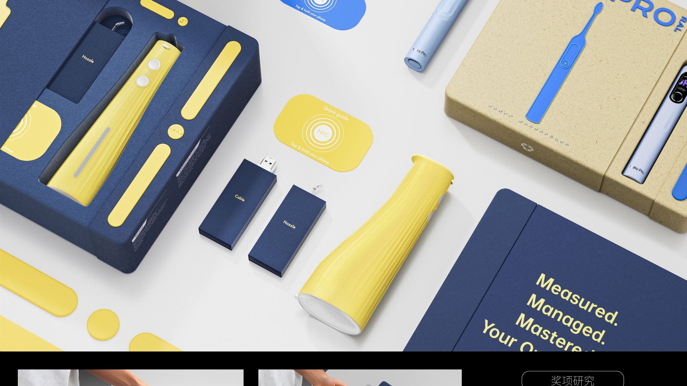
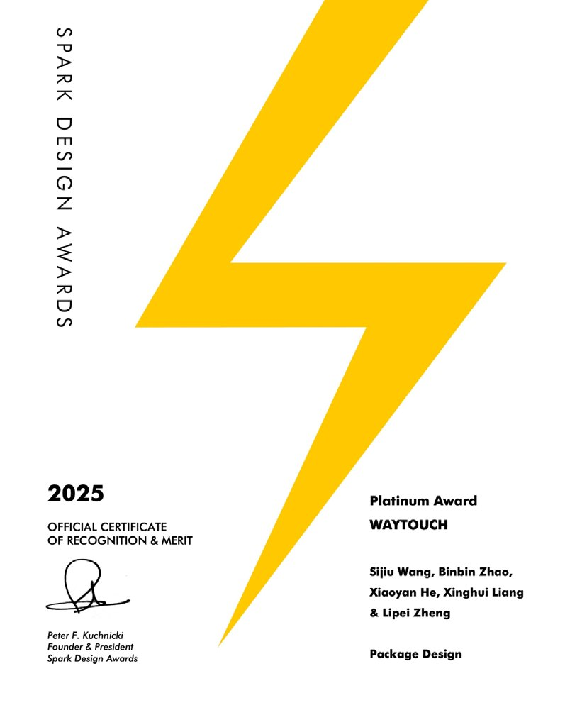
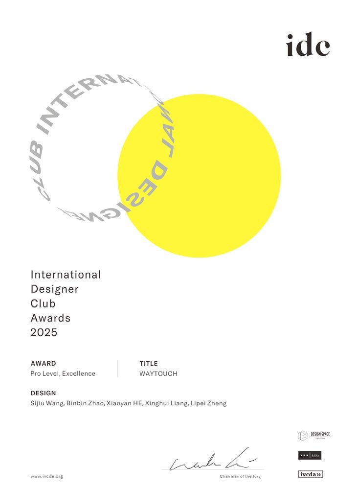
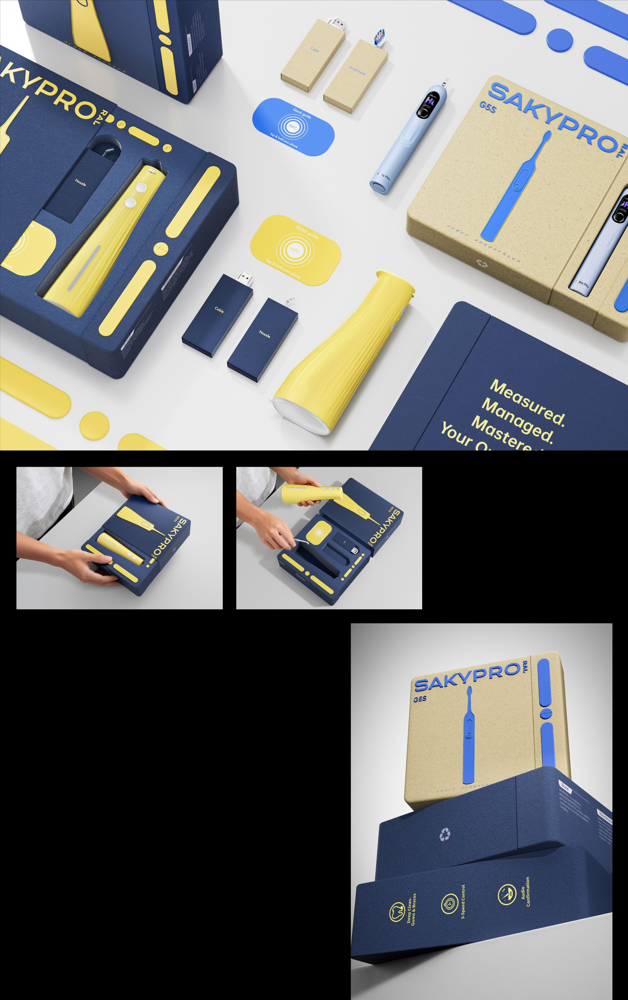

← Work — 14 / 15 · Other ProjectsWAY TOUCH · 循迹
Tactile paving, moved from the street onto packaging — a companion for the visually impaired that replaces sight with touch instead of pretending to. 循迹将盲道从街道延伸至包装之上，通过这一视障人群所熟悉的元素，陪伴他们拥有更自如的包装使用体验。


Background
设计背景
WAY TOUCH extends tactile paving from the street onto packaging. Using an element this audience already knows, it accompanies visually impaired users towards a more intuitive and accessible experience — just as tactile paving silently supports every journey, the packaging aims to be a quiet, reliable companion.
Awareness extends from an essential part of daily life — cleaning. While caring for oral health, the design also lets these users perceive the world on equal terms. WAY TOUCH does not replace sight; it uses touch as a language of perception, helping people experience the world more deeply and letting it return from a blurred view to clear, tangible sensation.
循迹将盲道从街道延伸至包装之上，通过这一视障人群所熟悉的元素，陪伴他们拥有更自如的包装使用体验。如同盲道默默地陪伴他们的每一次出行，包装也希望成为一位沉默而可靠的伙伴。
从日常生活不可或缺的一环 —— 清洁 —— 延展感知，在呵护口腔健康的同时，也让他们能平等地感受世界。循迹不替代眼睛，而是以触觉作为感知的语言，帮助他们以更深刻的方式感受世界，让世界从模糊的视线重回清晰的触感之中。
Approach
设计思路
Concept Packaging Design — the decisions that set the direction. 概念包装设计 —— 决定方向的几个选择。
-
01
A familiar language on a new surface把熟悉的语言搬到新载体
The tactile logic of paving is carried onto packaging, so nothing has to be learned before it can be used.
把盲道的触感逻辑从街道延伸到包装，使用者不需要先学习就能用。
-
02
Touch as the language of perception触觉作为感知的语言
The design does not claim to replace sight. It builds touch into a readable information system in its own right.
不做「替代眼睛」的设计，而是让触觉成为一整套可以独立阅读的信息系统。
-
03
From cleaning into everyday life从清洁延伸到日常
Brushing is the entry point — a daily action that lets the brand sit inside a real routine rather than beside it.
以刷牙这一日常动作为入口，让品牌进入真实的生活流程，而不是站在旁边。
Outcome
成果展示



- IDC
- IDC Design Competition — Excellence AwardIDC 设计大赛 —— 卓越奖
- SPARK
- SPARK International Design Awards — PlatinumSPARK 国际设计大赛 —— 铂金奖
- Deliverables
- Packaging system · tactile wayfinding · brand collateral包装系统 · 触觉导示 · 品牌物料
Next project / 下一个作品
Design Management